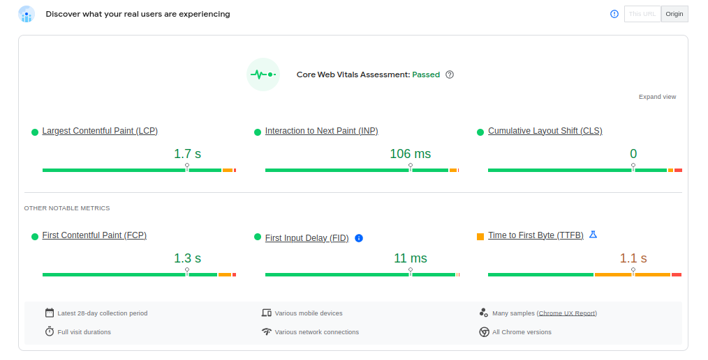

I've independently created complex design concepts and transformed them into functional, scalable products for printing company.
The fruit of my work is versatile product "Printing CMS", which key features are:
Rapid Product Creation
- 1-click photo to live product
- 1-click shop with hundreds of new products
- Native drag-and-drop photo to folder to generate and launch product (no need of web browser)
Extensive Customization
- Wide range of customization options from CMS
- Add any product ex. pillow or notebook and match to your design
- Enable company to create new products that align with brand identity.
Powerful Features:
- Client's batch processing option to generate multiple products from CSV or XSL.
- 3D previews to visualize design in realistic 3D previews.
Seamless Integration
- Easily integration with wordpress e-commerce platform and porting to other frameworks.
- Google drive to product sync
Mug
- Colour variation support
- Fake 3D preview support (touch on mobile supported)
- 1-click text list to product generation
- Support of pallet group and colour (pallet child) from csv or cover and text colour
- Smooth preview transition for different product settings
- Full custom quote text feature
- Quick font size change feature
Notebooks
- Supports paper type
- Rest support same as teacher planner
School planner
- Layout variation support for text and photo
- Intuitive crop photo
- Full text support
- Dynamic generated colours for cover and text taken from csv
- Pantone colour for cover support
Batch orders
- Supports XLS, XLSX or CSV
- Dynamic feed: column per input text feed - if product have 1 input field popup with concatenate column option is show
- Avoids header row value (by checking common values like name, surname etc.)
- Preview of generated products
Image to product generator
- 1-click image to product generation
- Fake 3D photo preview
- Information for product feed from yml for title, tags etc. (yml generated from file name)
PageSpeed Insights results

Technical details
- Json used for product and design therefore - no heavy DB usage
- "Long-lived" transient are used in overall all static data for all products - no heavy DB usage
- Product (mug, notebook, planner) are abstracted from product. Same design. Design can be served for different products
- Wordpress and Woocommerce was used due to more control, plugins (LightSpeed, wordfence), server support (LightSpeed)+ future development => separate CMS and product to separate sites and use json + js framework in future only